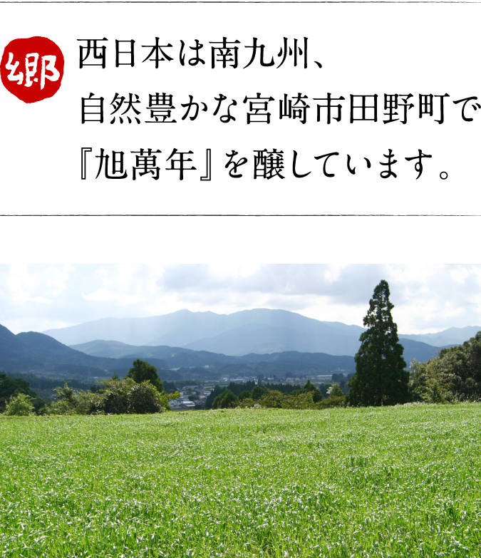

常圧蒸留、一徹。
これからも変わりなく、
『旭萬年』は次の百年へ。


祖

当酒造場の創業者、初代渡邊壽賀市は一八七八年愛媛県伊方村（現伊方町）で生まれました。若くして渡米し林業で成功。帰国後は林業が盛んな宮崎県田野村へと移住しました。その際売りに出ていた焼酎蔵を購入、創業に至ります。ところが五年後の一九一九年大火に見舞われて蔵は全焼。失意の壽賀市に近隣住民が手をさしのべ蔵は再興。今も残る『火災見舞受帳』には壽賀市の筆で「Don’t forget」と痛切な思いが書き遺されています。
孫


現在は曾孫で四代目の兄・幸一朗と
弟・潤也が、壽賀市の蔵を守っています。
左から:渡邊潤也、渡邊真利子、三代目・渡邊友美、四代目・渡邊幸一朗（2014年11月）
| 西暦 | 和暦 | 出来事 |
|---|---|---|
| 1900年頃 | 明治時代後期 | 愛媛県伊方村から創業者・渡邊壽賀市が林業の技術習得のために渡米。 |
| 1914年 | 大正3年 | 壽賀市、アメリカから帰国。林業が盛んだった宮崎県田野町に移住する。売りに出ていた焼酎蔵を購入し「渡邊醸造」を設立。 |
| 1919年 | 大正8年 | 隣家からの移り火で蔵は全焼。落胆した壽賀市だったが、近隣の住人の助けもあって醸造再開を果たす。 |
| 1928年 | 昭和3年 | 早くに一人息子を亡くしていた壽賀市は、甥・渡邊鶴吉の長女・恵子を養子として迎え入れる。 |
| 1946年 | 昭和21年 | 出征前から蔵を継ぐことが決まっていた渡邊一男（旧姓 坂本）が正式に二代目として蔵に入る。 |
| 1975年 | 昭和50年 | 法人化に伴い「有限会社渡邊酒造場」へ社名変更。 |
| 1982年 | 昭和57年 | 一男の長男、渡邊友美が杜氏となって初めて国税局酒類鑑評会の優等賞を受賞。その記念として受賞作品の原酒を長期貯蔵する。33年後の2014年に「百周年記念 大古酒」として発売。 |
| 1996年 | 平成8年 | 一男が代表を辞任し、渡邊友美が三代目代表に就任。 |
| 2001年 | 平成13年 | 友美の長男、渡邊幸一朗が蔵を継ぐために帰郷。親子孫の三世代での醸造が始まる。 |
| 2003年 | 平成15年 | 幸一朗が蔵に戻って初めて手がけた銘柄「無濾過 旭萬年」発売。 |
| 2011年 | 平成23年 | 幸一朗の実弟、渡邊潤也が蔵に入り、兄弟揃っての醸造を始める。 |
| 2014年 | 平成26年 | 4月、友美が代表を退き、幸一朗が四代目として代表就任。7月、就任披露および渡邊酒造場創業百周年の記念パーティを行う。 |
| 10月、「百周年記念 大古酒」発売。 |
主


郷
西日本は南九州、自然豊かな宮崎市田野町で

宮崎市・日南市・北諸県郡三股町を

鰐塚山から吹き下ろす
西日本は南九州、自然豊かな宮崎市田野町で
『旭萬年』を醸しています。

宮崎市・日南市・北諸県郡三股町を
またがって聳える
鰐塚山地の最高峰・
鰐塚山、その麓に広がる宮崎市田野町が
私たちの故郷です。
当酒造場がある宮崎県宮崎市田野町は、町内のほとんどが田んぼや畑という程に農業が主役の田舎町です。故郷田野の象徴といえば、宮崎市・日南市・北諸県郡三股町に連なって町の南に雄大な山容を見せる鰐塚山。南九州ならではの温暖な気候と緑豊かな自然環境に包まれた風土で『旭萬年』は醸されます。
鰐塚山から吹き下ろす
寒風「鰐塚颪（おろし）」が生んだ
「干し大根生産日本一」の田野町。
農業が主役の田野町で、その代表的な農産加工品が「干し大根」。その生産量は日本一を誇ります。冬、鰐塚山から「鰐塚颪（おろし）」と呼ばれる寒風が平野部に吹き下ろす頃、町内各所に組まれる「大根櫓」は、町の風物詩として有名です。
道
アクセス：宮崎空港から自動車で約20分。
| 航空 | ||||
|---|---|---|---|---|
| 東京（羽田） | 1時間 45分 | 宮崎 | ||
| 大阪（伊丹） | 1時間 10分 | 宮崎 | ||
| 福岡 | 40分 | 宮崎 | ||
| ＪＲ | 日豊本線 | |||
|---|---|---|---|---|
| 宮崎 | 23分 | 田野 | ||
| 自動車 | 一般道＋宮崎自動車道 | |||
|---|---|---|---|---|
| 宮崎空港 | 20分 | 田野 | ||
渡邊酒造場のある田野町は宮崎市の中心街から身近な距離にあります。宮崎駅や宮崎空港から田野町へは、自動車やＪＲ利用で20数分でアクセスが可能です。また宮崎自動車道の田野インターからも2.5kmと身近です。宮崎県にお越しの際はぜひお立ち寄り下さい。